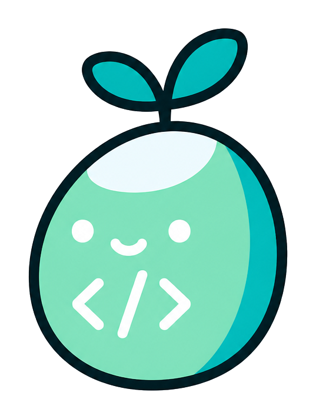
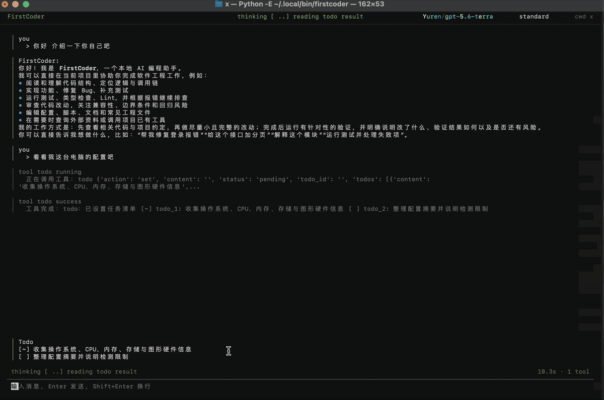
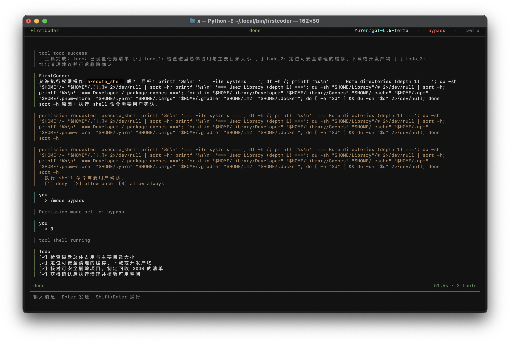
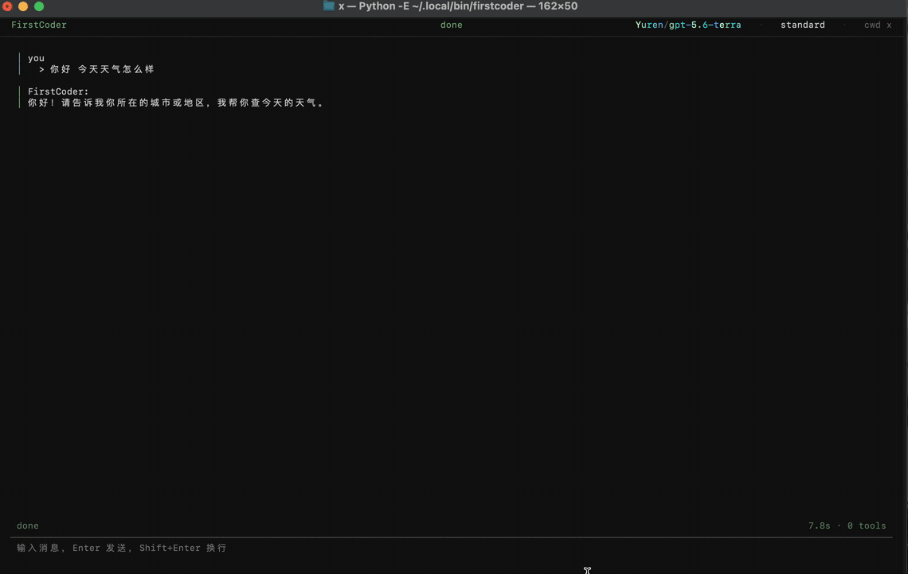
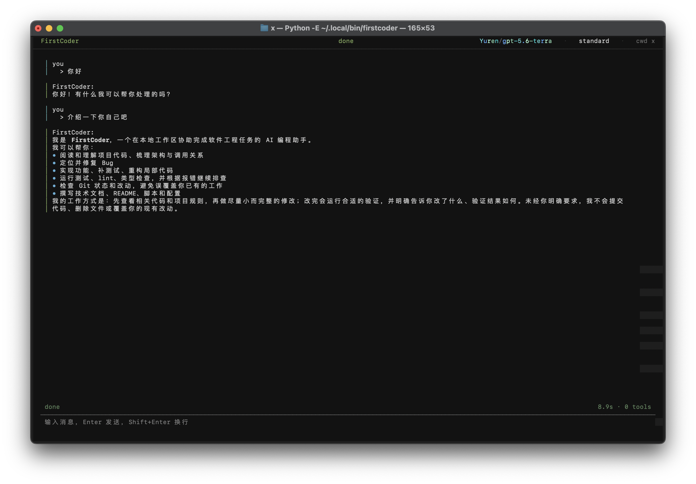

02
DECIDE AND EXECUTE · agent/loop.py
边界确认后，
再让任务一步步往前走。
模型可以选择读文件、搜索、编辑或执行命令。每一次工具结果都会回到当前任务的上下文，Agent 再根据新证据决定下一步，而不是一次生成后就“装作完成”。

AgentLens GitHub ↗LOCAL PYTHON CODING AGENT
AgentLens 是一个真实可运行的本地 Coding Agent：它会调用工具、确认权限、保存会话、管理长上下文；这些都不是黑箱。
pipx install firstcoder
BUILT TO BE UNDERSTOOD
大多数演示只展示「输入一句话，代码就改好了」。AgentLens 选择把中间过程摊开：请求从哪里来，工具为什么能执行，风险操作何时暂停，长任务又如何继续。
它的取舍也很明确：不追求成为功能最杂的大平台，而是留下一条完整、可读、可修改的 Python 执行链路。
沿着运行过程往下看 →ONE REQUEST, END TO END
AgentLens 不把 Agent 讲成一组散落功能。它先确认你正在做哪件事，再让模型调用工具；风险处暂停，长任务留下可恢复的记录。
01 / KNOW THE TASK · context/task_boundary.py
每个 user turn 都不是一团模糊历史。AgentLens 会为当前任务建立可追踪的边界，后续消息、工具结果和上下文操作都归到同一条任务线上。
任务 hash 由程序侧生成；模型只对真实 user message 做判断，不能自己编一个边界。
支持强制 tool choice 的 Provider，会在用户新一轮任务的第一次请求先调用 task_boundary，再恢复自动工具选择。
task_boundary_observed 会进入 session 事件流；重新打开会话后，活动任务和稳定窗口都能重放。
DECIDE AND EXECUTE · agent/loop.py
模型可以选择读文件、搜索、编辑或执行命令。每一次工具结果都会回到当前任务的上下文，Agent 再根据新证据决定下一步，而不是一次生成后就“装作完成”。
PAUSE AT RISK · permissions/
写文件、运行 shell、访问网络等动作先经过工具声明、注册表预检与策略判断。若结果是 ask，Loop 保存原始调用、暂停后续执行，等确认再按 request id 恢复。

KEEP THE SIGNAL · context/
稳定系统前缀、会话历史和工具输出会按需投影。旧任务切换或窗口接近阈值时，AgentLens 可以压缩历史，把大输出归档在本地，需要时再有界读取。
WHAT COMPACTION KEEPS
每次模型请求都重新组合稳定前缀与当前任务需要的投影。信息量大的工具结果不会一直挤在消息窗口里：它们先归档，提示词只保留可判断下一步的摘要与引用。
retrieve_archive需要证据时，按 archive id 读取有界片段，而不是把全部历史再塞回来。ask 不只是 UI 弹窗。Loop 保存原始调用，确认之后从 request id 恢复。
工具结果可以归档，只投影预览；需要细节时再用 retrieve_archive 读取有界片段。
任务会完成、等待确认，或触发保护上限；不会无限转圈，主打一个“到点下班”。

05 / CONTINUE LATER · session/
每个项目的消息、工具调用、授权和结果都会追加为本地事件流。你可以恢复最近会话、选择旧会话、改名或分叉新思路；压缩之后，仍能重建可读记录。
THE TOOLS IN THE MIDDLE
不是一堆临时脚本。每个工具都有 schema、权限需求和执行结果，模型可以调用，用户也能追踪。
lsviewgrepglobtreeread_multi
git_statusgit_diffgit_logdiagnosticsthink
writeeditdeleteapply_patchshellpython_exec
fetchweb_searchask_usertodo
task_boundaryretrieve_archive
WHY THIS STAYS READABLE
上下文、工具、权限、Provider 与会话各自处理自己的职责。AgentLens 的价值不在于让你相信它，而在于你可以从一次请求顺着模块读到具体实现。
agent/编排执行循环tools/运行本地工具permissions/管理策略与授权context/维护长对话上下文
$ pipx install firstcoder
$ firstcoder
# 单条任务
$ firstcoder --message "Summarize this repository"
# 交互模式
$ firstcoder --interactiveFAQ
适合想理解 coding agent 运行机制、希望二次开发本地 Python 实现，或需要一个能讲清楚架构的作品集项目的人。它也能用于日常任务，但优先级是「真实且可读」。
AgentLens 维护的是完整的 model → tool → evidence → model 循环。模型可以读取仓库、修改文件、执行命令，再根据新的工具结果继续判断；任务会在完成、等待确认或触发保护条件时结束。
会。权限由工具注册表、权限管理器与默认策略在程序侧执行。当策略返回 ask，Agent Loop 会保存原始调用并暂停，后续工具不会抢跑；确认后才用对应 request id 恢复。
因为新问题不应该被旧任务的上下文污染。task_boundary 只让模型报告 same / new / uncertain，稳定 task hash 由程序生成，并随 session 事件保存。支持强制 tool choice 的 Provider 会在真实 user turn 的首次请求先走这一步。
不是直接丢。稳定系统前缀和当前任务需要的历史会继续投影；大工具输出和较旧细节可以归档，提示词里保留摘要与引用。需要原始证据时，retrieve_archive 只能从当前 session 读取有界片段，而不是一次塞回全部历史。
会话以事件流保存消息、工具调用、授权和结果。使用 /resume 选择已有会话即可继续；也可以用 /fork 从当前会话复制一条新分支，或用 /rename 整理会话标题。
模型配置可放在全局 ~/.config/firstcoder/config.toml 或项目级 ./firstcoder.toml；密钥通过如 FIRSTCODER_API_KEY 的环境变量提供，不需要写进项目代码。
可以。Provider Adapter 负责把不同模型协议收敛到运行时；项目与全局 Skill 可被发现、加载并写入审计事件；stdio MCP 与外部能力通过统一工具协议接入。具体可用性取决于当前 Provider 配置和已安装服务。
默认策略会按工具和路径请求权限，标准模式限制在项目范围内；会话、归档和配置都由本地工作流管理。切换到更宽松模式会改变访问范围，因此应只在你明确理解影响时使用。
写代码，也把代码背后的
Agent 看明白。